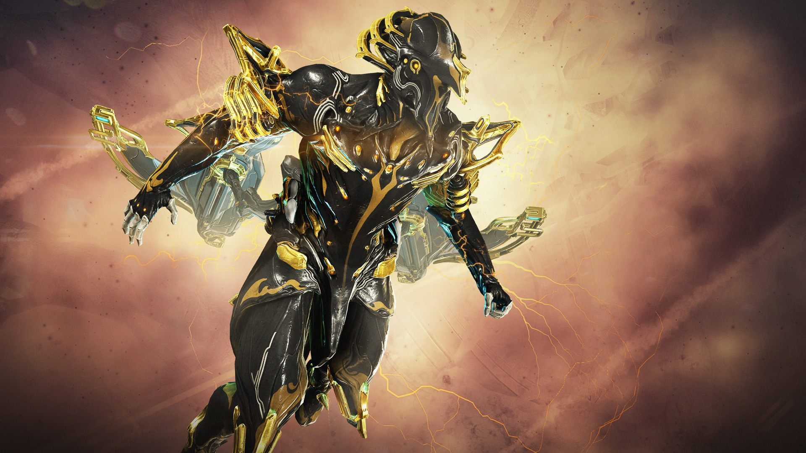
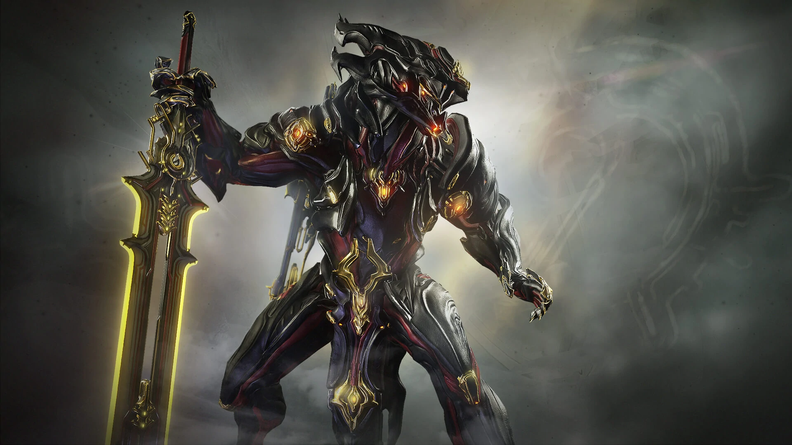
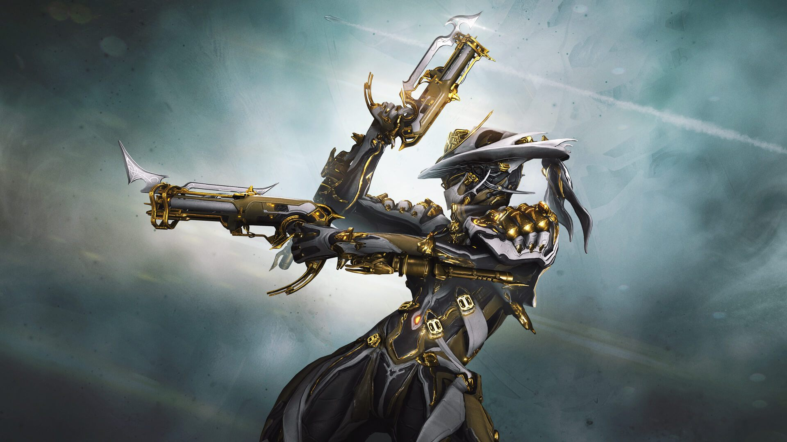

In this section of my website youwill find the top 5 frames i reccomend for newer players in no particular order
Excalibur
Excalibur is in my opinion your best choice of a starter warframe as his kit works in just about every single scenario with a ride variety of abilities ensuring you will always be a valuable member of the team

Volt
Volt i would say is your second best option for a starter warframe however it is my personal opinion that he is not as helpful as excalibur as his kit is more specialized for specific situations
Chroma
Chroma is not available as a starter frame however i do reccomend that you pick him up as soon as possible as the raw damage output he provides is always helpful and he is one of the easiest frame that you can achieve this kind of damage with
Mesa
Mesa is one of my go to crowd control frames and at least early game she is the undisputed
